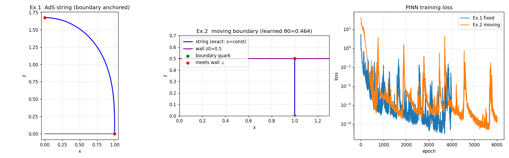

ニューラルネットに答えを一つも見せずに、微分方程式を解かせる。やることは、運動方程式からの“ずれ”（残差）を損失にして、小さくしていくだけです。物理知ニューラルネット——PINN。下の小さなネットは、いまこのページの中で学習しています。 Physics-informed neural networks: no answers shown, only the equation itself used as the loss. The small networks below train live, inside this page.
減衰振動 ẍ + h ẋ + ω² x = 0、x(0) = 1, ẋ(0) = 0。ネット xθ(t) は正解の曲線を一度も見ていません。見ているのは、64個の時刻で測った残差だけです。
ẍ + h ẋ + ω² x − λ x³ = 0 の係数 h, ω², λ を知らないふりをします。手がかりは、ノイズの乗った40個の観測点だけ。係数も学習パラメータにして、ネットと一緒に動かします。
ネットの出力 xθ(t) を「解の候補」とみなし、自動微分で ẋθ, ẍθ を取って方程式に代入します。正しい解なら残差はゼロ。だから残差の二乗を損失にして、初期条件のずれを罰則として足すだけで、学習が「方程式を解く」ことになります。
逆問題は、ここに観測データとのずれ Σi (xθ(ti) − gi)² を足し、係数 h, ω², λ も学習パラメータにするだけです。順問題と逆問題が、同じひとつの損失で扱える——これがPINNのいちばん気持ちのいいところです。
このページのネットは 1→32→32→1 の小さなもので、ライブラリを使わずに書いています。x, ẋ, ẍ を層ごとに一緒に前へ流し、その三つ組ごと誤差逆伝播で微分しています。手書きの微分は、有限差分と突き合わせて相対誤差 2×10⁻⁹ で一致することを確かめました。
上のタブを「なし」に切り替えると、序盤だけ合って、後半はゼロに潰れた平らな線になりがちです。x ≡ 0 も方程式をきちんと満たすので、残差だけ見れば「正解」の一つなんです。しかもニューラルネットは低い周波数から先に覚える癖（スペクトルバイアス）があり、何周も振動する解はなかなか表せません。序盤でずれると、後半はその楽な解に流れていきます。
そこで、入力の時刻 t を最初の層で sin(ωk t + φk) の束に展開します（フーリエ特徴）。周波数のものさしを最初から渡しておくわけです。これだけで、同じ大きさのネット・同じ学習回数でも、ずれは 10⁻³ 程度まで下がります。最近は、早い時刻の残差が小さくなるまで後ろの時刻の重みを下げる「因果的な学習」など、この“崩れ”を防ぐ工夫が研究の中心のひとつになっています。
PINNの本領は、ふつうの数値解法が苦手な問題で出ます。取り組んだのは、反ド・ジッター（AdS）時空 ds² = (−dt² + dx² + dz²)/z² の中にぶら下がる弦の形です。ホログラフィー（AdS/CFT対応）では、境界 z = 0 に両端を留めた弦のエネルギーが、クォーク間のポテンシャルに対応します。極座標 (x, z) = (R cos θ, R sin θ) で書くと、弦の形 R(θ) は次の方程式に従います。

おもしろいのは2つ目です。時空に「壁」z = z₀ があるモデル（クォーク閉じ込め相に対応）では、弦は壁に垂直に交わって終わります。ところが弦が壁に届く角度 θ₀ は、解いてみるまで分かりません。計算領域の端そのものが未知なので、ふつうの撃ち込み法（shooting）では、θ₀ を当て推量しては解き直すことになります。
PINNでは、θ₀ も学習パラメータのひとつにしてしまいます。θ = θ₀ s（s ∈ (0, 1]）と変数を変えると、領域が θ₀ と一緒に伸び縮みし、損失の勾配が θ₀ にも流れます。「壁に届く」「壁に垂直」という二つの条件を損失に足すと、弦の形と領域の端が同時に決まりました。
| 例題 | PINNの結果 | 厳密な値 |
|---|---|---|
| 境界に留めた弦（幅 L = 2）の頂点の高さ | 約 1.67 | 1.669 |
| 壁 z₀ = 0.5 に届く角度 θ₀ | 0.464 | arctan(1/2) = 0.4636 |
壁がある場合の厳密解は、まっすぐ下りる弦 R(θ) = sec θ です。ネットはこれを再現しながら、領域の端 θ₀ を小数第3位まで言い当てました。この問題は、AdS/CFTの時空計量そのものを深層学習で求める橋本らの研究（Phys. Rev. D 98, 046019）にもつながっています。
最初は Apple の GPU（PyTorch の MPS バックエンド）で学習させたところ、損失が 2 前後から下がらなくなりました。同じコードを CPU で回すと、厳密解とのずれは 3×10⁻³ まで下がります。切り分けると、torch 2.12.0 の MPS は、バッチが16以上のとき「入力についての勾配」を誤った値で返していました。エラーも警告も出ません。ふつうの学習で使う「パラメータについての勾配」は正しいので、PINN のように ∂xθ/∂t を損失に使う手法だけが、静かに壊れます。
それ以来、入力についての微分や高階微分を初めて使うときは、有限差分で一度だけ検算することにしています。このページの手書きの微分も、そうして確かめてから載せました。
このページの数値は、ブラウザ内の学習（1→32→32→1、コロケーション点64、Adam）によるものです。乱数や端末によって結果は少し変わります。逆問題の λ は、振動が減衰すると x³ の項が小さくなって効きが弱まるので、3つの係数のうちいちばん決まりにくく、データによって ±0.3 ほどぶれます。
参考：橋本幸士 編『学習物理学入門』（朝倉書店, 2024）A4章／棚橋典大「物理的ニューラルネットによる極小曲面の生成」（セミナー, 2025）／M. Raissi, P. Perdikaris, G. E. Karniadakis, J. Comput. Phys. 378 (2019)／M. Tancik et al., “Fourier Features Let Networks Learn High Frequency Functions…” (NeurIPS 2020)／S. Wang, H. Wang, P. Perdikaris, “On the eigenvector bias of Fourier feature networks” (CMAME, 2021)／S. Wang, S. Sankaran, P. Perdikaris, “Respecting causality for training physics-informed neural networks” (CMAME, 2024)／K. Hashimoto et al., “Deep learning and the AdS/CFT correspondence”, Phys. Rev. D 98, 046019 (2018)